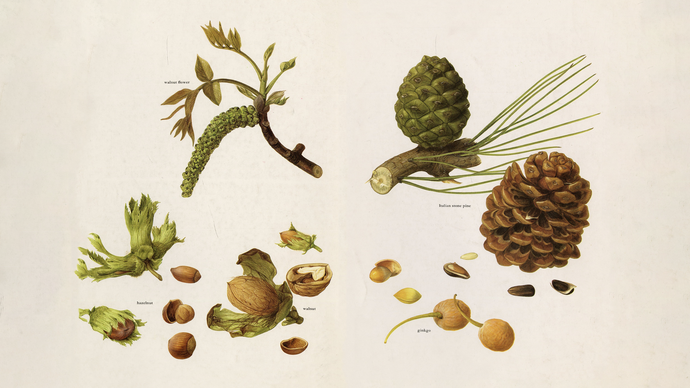

I have long been a gatherer. Though we rarely hear this word used literally anymore, we do hear its sister gathering, as in gathering people, gathering information, gathering pace. Occasionally—increasingly, through a year of pandemic—we hear of gathering mushrooms and wild-foraged bouquets,1 hobbies for the otherwise domesticated. But the term gatherer we more immediately associate with our origins as hunter-gatherers, nomads foraging food and moving with the seasons for subsistence. We went, we gathered goods, and then we returned home to our kin, sharing as survival.
In Ursula K. Le Guin’s Carrier Bag Theory of Fiction 2 (1986), Le Guin posits the first human tool as the basket, not the spear, thereby recasting the first protagonist as a gatherer, not a hunter. Not only did this address the deeply gendered roles of these two parts, it also changed the singular hero to the plural collective, from he to we. “Before the tool that forces energy outward,” she writes, “we made the tool that brings energy home.” Gathering, for Le Guin, is not a masculine, techno-utopian process of disruption or of moving fast and breaking things, but the methodical, deep labor that comes from “looking around, rather than looking ahead,” from gathering rather than hunting. 3

When I call myself a gatherer, I mean that, even without my hands in dirt, I aggregate, together with collaborators, disparate pieces from an ecosystem, and develop the appropriate container for each collection. It was only when Laura Coombs pointed out the byline for the book Pleasure Activism (2019), “gathered and edited by adrienne maree brown,” 4 that I began to see myself in the term and its use. Pleasure Activism is a gathering of ideas, stories, interviews, held together in the shape of a book. As a container, it is more than just the sum of its parts; the book is the site around which its public forms, and a place in which to gather that public. 5
Gathering is, in this way, not the act of aggregation alone. It is not an automated collection or the formal acquisition of works for an institution, nor is it the plundering or extraction of resources from a neighboring region. It is the tender and thoughtful collection of goods for your kin, and a moment for reunion, for celebration, and for introspection around those goods. Now, as I reflect on some of the many remote conversations I’ve had in the past year, I see a throughline of gathering in its many forms: the material gathering of crowd-sourced ephemera; the social gathering of sharing these findings in online conversations; and the collective building of digital tools to contain them. Gathered here, in this text, these expansions and explorations of what gathering is and what it can be might help us return to the original meaning of the word, sharing as survival, as we move from physical to virtual contexts.
The NWSC was also an early inspiration for my ongoing work, the Cyberfeminism Index, 8 which I have been gathering and facilitating in conversation with net artists, historians, activists, named in a growing list on the “about” page of the site. The index holds examples of hackerspaces, digital-rights activist groups, DIWO (Do-It-With-Others) organizations, DIY (Do-It-Yourself) teledildonics manuals, bio-hacktivists, data dominatrixes, and open-source estrogen pioneers. Like the NWSC, the Cyberfeminism Index too began as a bibliography—inspired, secondhand, by a claim Kirsten’s advisor at Barnard made that revolution cannot not happen within an institution; Kirsten and Susan, the advisor said, needed to go grassroots. While I myself didn’t leave on a road trip, I logged hundreds of hours of phone calls and emails, which led to web rings, hypertext trails, and screenshots of the Wayback Machine and Rhizome’s Webrecorder. 9
The current container of the Cyberfeminism Index is a bespoke website, developed by Angeline Meitzler with frontend support from Janine Rosen, that highlights a multiplicity of voices, visualization of citations, and the site’s aging. You might feel, upon arrival, that the site comes across like any other data table, but as you begin to move, the site responds: colors appear, form elements glow, and each click is added to a side panel “trail” that can be downloaded, printed, and disseminated. 10 Formerly, the index lived in an open-access, crowd-sourced spreadsheet. Soon it will be a book. 11
Among the resources catalogued within the Cyberfeminism Index, you see various forms of Legacy Russell’s Glitch Feminism—first a manifesto (2012), then an essay (2013), and now an anthology (2020). 12 In a public conversation, Legacy and I discussed the idea that an essay anthology or digital index, in their presentations of new histories, might serve as maps. 13 By aggregating nodes and markers, hard research and scattered facts, these containers might surface suppressed voices among the connections they draw, as introduced by Saidiya Hartman’s notion of “critical fabulation.” History written by the victors offers glimpses of marginalized figures, for whom we need to “fabulate” stories to “strain against the limits of the archive” and “represent lives… through the process of narration.” 14 Building relationships between things is a form of authorship too.
In an interview with Roxana Fabius, Patricia M. Hernandez, and me for The Scalability Project (2020), adrienne maree brown described relationships like a spiderweb—diaphanous yet strong, thick yet porous. “A web allows things to fall through, like a sieve,” she said. “Some things are not meant to be caught.” I like to think of these webs as citational networks; who you read allows you to catch similar sentiments. brown also built upon Audre Lorde’s “The Master’s Tools Will Never Dismantle the Master’s House” (1984), declaring, “I believe conversation is not a master’s tool. I believe being in a circle, in a community, is not a master’s tool.” Here, she describes gathering people to share stories as a web, a network, as a finding aid for like-minded voices. 15
Amelia Winger-Bearskin makes a similar claim: “If history is written by the victors, then the future will be written by the vectors,” she says. A technologist, artist, and host of Wampum Codes, Amelia interviews Indigenous people who work with new technologies in what she labels “co-creation through a podcast.” As a member of the Seneca-Cayuga Nation of Oklahoma in the Haudenosaunee (Iroquois Confederacy), Amelia told me in a conversation for DataBrowser that she was taught to think about storytelling from a decentralized perspective. Stories are entrusted to storytellers by the elders. But these storytellers are not meant to repeat the narrative verbatim; they are expected to understand these stories and, through them, reflect on what the community needs to hear at any given moment. This temporal gathering, both in and around a story, acknowledges the personal subjectivities always inherent in retelling. Only multi-authorship truly exists.
Memory work of this sort is also a form of activism. Whose memories are saved and retold to future generations? Hailey Loman, the co-creator, along with her interviewers and storytellers, of the Autonomous Oral History Group (AOHG), spoke with me about the collective gathering of stories. “You’re taking a lived experience and making a record of it together,” Loman said. There is a “sweet duty” to shaping someone’s personal memories. Oral histories, like publications, bind people. After a conversation, all parties maintain ownership of what transpired, and they continue to hold ties to one another. This form of storytelling is not predetermined, but develops through its unfolding. Perhaps gathering stories is radical because it refuses to give the gatherer all of the credit. The collector-collection dynamic is deliberately broken. The person who puts it together is only one of many parts.
Though seemingly intimate, these aforementioned conversations were held remotely through a myriad of video-conferencing tools that have become so familiar in pandemic times. And while the frequency of online correspondence has increased, the platforms of these new social gatherings have affordances, affecting behaviors of those who use them. Since the start of the pandemic, Prem Krishnamurthy has led Present! an experimental Zoom talk show and performance series that tries to activate all of the different modes of dialogue that might exist on one given digital platform. 16 In early February 2021, I attended Prem’s latest workshop and conversation, co-led by Kalaija Mallery, called “A Gathering of Gatherings,” around new formats of online convening. We discussed sociologist Ray Oldenburg’s concept of the “third place,” the space between home and work, and whether this place could exist online. The event began with rules for conduct and an “incomplete list of suggestions for organizing communities online.” Present! feels like a feedback loop, adapting suggestions from the audience into the live event and then commenting on its output. After Kalaija pointed out the lack of white noise that often creates the ambience for most online events, everyone unmuted. When we keep our microphones off and stage our conversations as a singular broadcast between hosts and viewers, we lose moments for participation. Consider the eeriness of seeing everyone laugh but hearing silence. Once everyone unmuted, we shed our formality and the casual conversation returned, with the many moments of interruption that permeate in-person gatherings.
These rules of engagement, for conduct and for play, created what Priya Parker calls “temporary alternative worlds,” in The Art of Gathering (2018), which was recommended to me by Laurel Schwulst. The primary goal of meaningful social gatherings, or, as Priya writes, “the conscious bringing together of people for a reason,” is to create a “sense of belonging.” 17 On remote conferencing platforms, we’re limited to very particular frames and senses, so if we want to connect with people, we actually have to learn new skills. In the process, we might embrace “bumpiness,” Prem’s term for “pleasure in the irregular, in what’s not already expected and familiar.” In the end, as Prem’s longtime colleague Chris Wu stated, “It’s not about perfection. It’s all about the gesture.”
Gathered here, we weave from cyberfeminist indexes to citational networks and from oral histories to conversational, online events. As we continue to learn our way with these digital tools and online events, we might shift our energy from trying to prevent inevitable technical difficulties to cultivating a sense of belonging. Tools break and containers change, but the urge to tell stories remains. Containers and content can be used to mutually inform the shape of their counterparts, expressing a tender, anti-heroic, communal, and present side of storytelling in place of our received understanding of historical material as heroic, individual, disconnected, and past. As we complicate the definition of gathering, this blurring of container and content diminishes any lingering idea of fixed, solitary authorship. After all, societal movements come not from singular authors but emerge as dissolved collections, making it impossible to know where one thing begins or ends. To survive, we gather not only from what’s around us, but from among us.